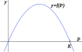
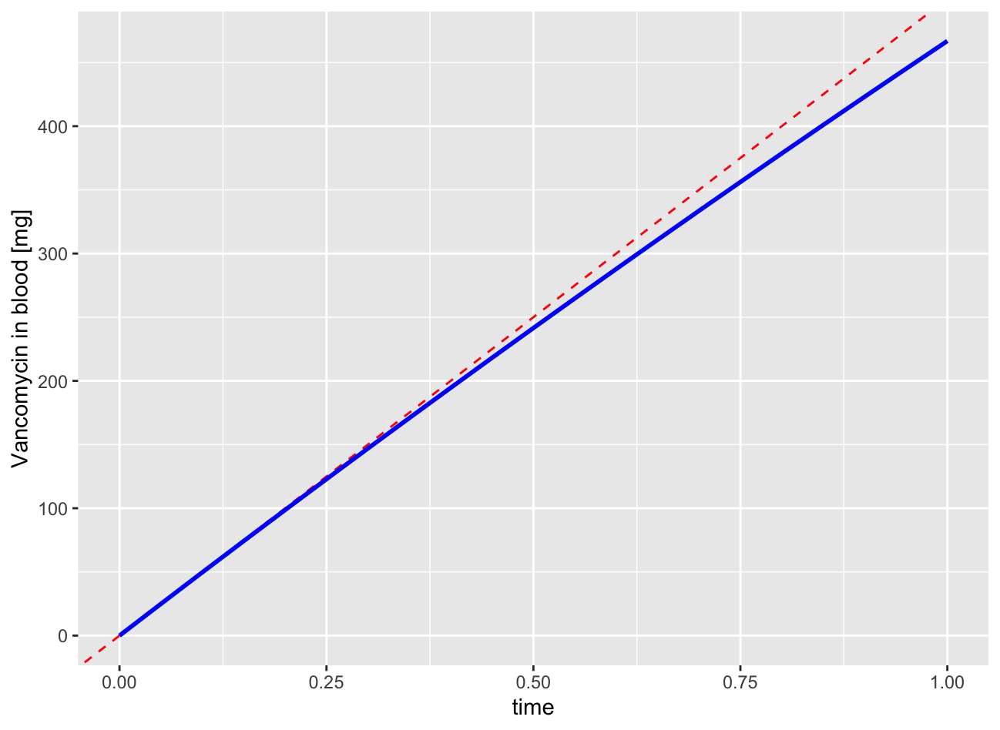
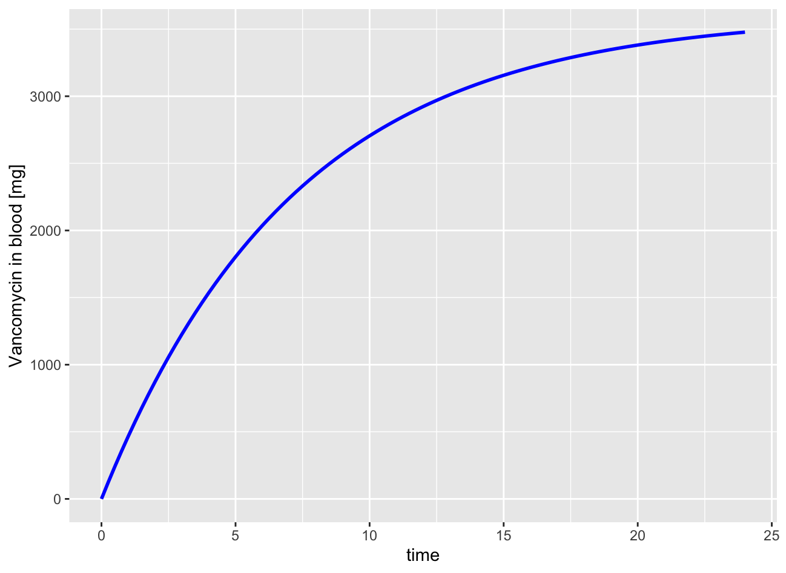
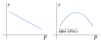
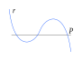
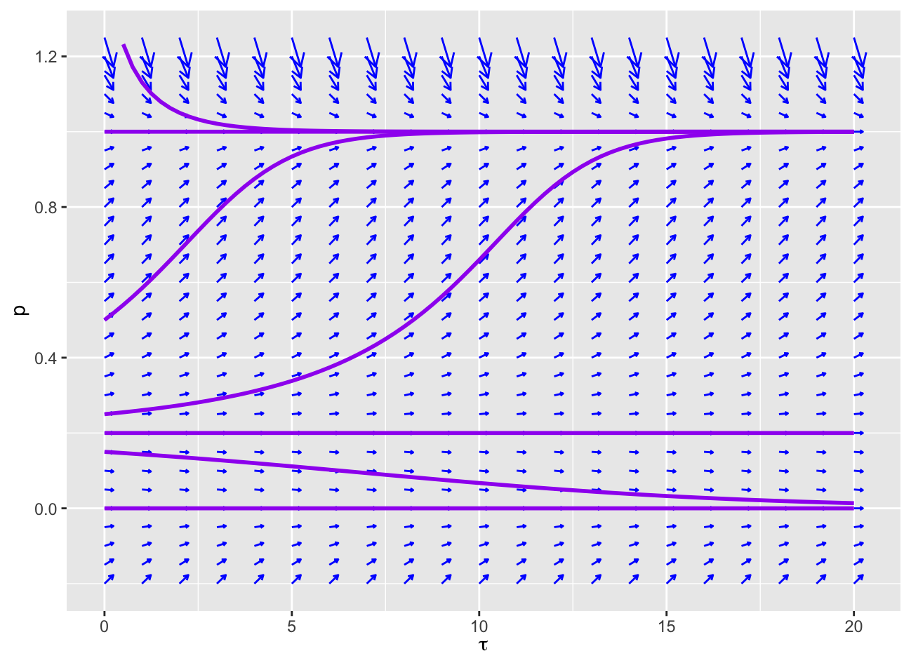

Section4.3Analysis of Equilibria, Drug Dosing, and the Allee effect
The logistic differential equation model provided an example where the model had two equilibria, one of which was stable and the other was unstable. When a differential equation is autonomous so that
then the equilibria correspond to the roots of \(f(x)\) solving \(f(x)=0\text{.}\) In this section, we will focus on some core principles about analyzing a differential equation including the stability of equilibria.
Subsection4.3.1The Phase Line
In a differential equation, the state variable is a function of time. Suppose that \(X\) is our state variable in a differential equation \(X' = f(t, X)\text{.}\) Finding a solution means that we are finding a function\(X(t)\) so that at each point \((t, X(t))\) on the graph of the function has a slope \(X'(t)\) that is equal to the slope field formula \(f(t, X(t))\text{.}\) The graph of the function lives in a 2-dimensional space of points \((t,X)\text{.}\)
We want to think of \(X(t)\) as existing in a 1-dimensional space representing the state alone \((X)\text{,}\) but where the state changes for different values of time \(t\text{.}\) I like to think of \(X\) as if it is a point living on a line, which we call the phase line. As time advances, that point moves around on the line. The function \(X(t)\) represents how the point’s location depends on time.
The figure below illustrates this idea with a video. Time is represented on the horizontal axis. The phase line is illustrated as a line overlapping the vertical axis for our state variable \(X\text{.}\) In the video, as time advances, the point on the phase line moves to match the value of \(X(t)\) on the graph.
Figure4.3.1.\(X(t)\) moves along the phase line as a function of time \(t\text{.}\)
Now, consider possible behaviors of solutions for a time autonomous differential equation, \(X' = f(X)\text{.}\) Because the differential equation does not itself depend on time, the direction of motion only depends on the value of \(X\text{.}\) From calculus, we know that when \(X'(t) \gt 0\text{,}\) the function \(X(t)\) is increasing, and when \(X'(t) \lt 0\text{,}\) the function \(X(t)\) is decreasing. Consequently, if we look at a graph of the slope field function \(f(X)\) as a function in its own right, we can use the signs of \(f(X)\) to determine direction of motion on the phase line.
Theorem4.3.2.
Let \(f(X)\) be a slope field function that is independent of time and suppose that \(f(X)\) is continuous.
Points where \(f(X) = 0\) are equilibria. Solutions that start at this point stay there forever.
If \(X\) starts at a point in an interval where \(f(X) \gt 0\text{,}\) then \(X(t)\) is increasing and moves in the positive direction within that interval.
If \(X\) starts at a point in an interval where \(f(X) \lt 0\text{,}\) then \(X(t)\) is decreasing and moves in the negative direction within that interval.
As a consequence of the existence and uniqueness theorem, a solution can not move through an equilibrium (which is itself a solution). Consequently, the roots in and intervals associated with \(f(X)\) completely characterize the directions of solutions.
Example4.3.3.
The logistic differential equation \(P' = r_0 P(1-\frac{P}{K})\) has as its slope field function \(f(P) = r_0 P(1-\frac{P}{K})\text{.}\) This is a quadratic function that opens down and has roots at \(P=0\) and \(P=K\text{.}\)

The phase line will have equilibrium points at \(X=0\) and at \(X=K\text{.}\) On the interval \((0,K)\text{,}\) the rate function is positive so \(X\) will be increasing on that interval. On the interval \((K,\infty)\text{,}\) the rate function is negative so \(X\) will be decreasing on that interval. Similarly, \(X\) is decreasing on \((-\infty,0)\text{.}\)
We can use the phase line diagram to characterize the stability of an equilibrium. If the phase line diagram shows solutions on both sides moving toward the equilibrium, then that equilibrium is stable. If either side of the phase line has solutions that move away from the equilibrium, then the equilibrium is unstable.
The behavior of the phase line near the equilibrium can also be immediately determined by looking at the derivative of the rate function at the equilibrium. Notice that the slope of the logistic rate function is positive at \(P=0\text{.}\) This necessarily means that \(f(P)\) is negative on the left and \(f(P)\) is positive on the right. In general, any equilibrium where \(f'(X^*) \gt 0\) will be unstable. On the other hand, the equilibrium at \(P=K\) has a negative slope. The values of \(f(P)\) near that point are positive on the left and negative on the right. In general, any equilibrium where \(f'(X^*) \lt 0\) will be stable.
Theorem4.3.4.Derivative Test for Stability.
Suppose a differential equation \(X' = f(X)\) has an equilibrium at \(X=X^*\text{,}\) with \(f(X^*) = 0\) and suppose \(f'(X^*)\) exists.
If \(f'(X^*) \gt 0\text{,}\) then \(X=X^*\) is an unstable equilibrium.
If \(f'(X^*) \lt 0\text{,}\) then \(X=X^*\) is a stable equilibrium.
For the case where \(f'(X^*) = 0\text{,}\) the test is inconclusive. (Check the phase line directly.)
Subsection4.3.2Applications
Applying the principles of interpreting the phase line for a differential equation is an example of qualitative analysis. We have not solved the differential equation but we still understand the basic behavior that it will create.
The body metabolizes many drugs so that the drug is cleared from the bloodstream at a rate that is proportional to the drug concentration. Suppose we are considering the blood concentration of a patient in a hospital that is being dosed using an IV. This can be modeled as adding drug into the blood stream at a constant rate. What would a differential equation predict about the patient’s drug concentration?
We start by creating a differential equation. The state variable is the amount of drug in the bloodstream, \(D\text{.}\) The IV drip corresponds to a source of adding drug into the system. This occurs at a constant rate, say at a rate \(R_{IV}\text{.}\) The body metabolizes the drug, removing it from the blood stream, at a rate that is proportional to the amount of drug. If we use a positive proportionality constant \(k\text{,}\) then the drug is being cleared at a rate \(k D\text{.}\) The overall rate of change is the rate of drug being added minus the rate of drug being removed, leading to our differential equation
\begin{equation*}
D' = R_{IV} - k D\text{.}
\end{equation*}
The rate function defining our slope field is linear in \(D\text{,}\)
We know that \(f'(D^*) = -k\text{,}\) which is negative, so \(D = D^*\) is a stable equilibrium. If the patient starts with \(D(0)=0\text{,}\) the drug concentration will rise steadily and then converge \(D \to D^*\text{.}\)
Example4.3.5.
Vancomycin is an antibiotic that is commonly administered intravenously. The typical recommended intravenous dosing is 500 mg per hour (for an hour). The data sheet for the drug lists a half-life of approximately 5 hours. If the dosing were to continue at this rate indefinitely, what would be the equilibrium? How close do we get to equilibrium after the one hour of dosing?
To apply this information to the model, we have the constant rate of dosage as \(R_{IV} = 500\) (mg/hr). The half-life allows us to find the rate constant \(k\text{.}\) In the absence of additional doses of drugs, our model for the drug in the blood is just \(D' = -k D\text{,}\) which has an exponential solution \(D(t) = Ae^{-kt}\text{.}\) The half-life is the time it takes to go from \(D(0) = A\) to half that value \(D(t_{1/2}) = \frac{1}{2}A\text{.}\) Using the model, we have \(e^{-kt_{1/2}} = \frac{1}{2}\text{,}\) which allows us to solve for
\begin{equation*}
k = - \frac{\ln(1/2)}{t_{1/2}}\text{.}
\end{equation*}
With \(t_{1/2} = 5\) (hr), this means \(k = 0.13863\text{.}\)
We now have our differential equation,
\begin{equation*}
D' = 500 - 0.13863 D
\end{equation*}
with an initial value \(D(0) = 0\) (no drug at the start of treatment). The equilibrium can be found by solving
\begin{equation*}
500-0.13863 D = 0
\end{equation*}
to obtain \(D=3606.7\) (mg). At the end of only one hour, we have only administered 500 mg, but the body will have already metabolized some of that. To find the amount in the body, we need to solve the differential equation with the given initial value. In our graph, we will compare the amount in the bloodstream with the total amount administered to that point.
# Model parameters
model_params <- c(R_IV = 500, k = -log(0.5)/5)
# Define the rate function
rateF <- function(t, state, params) {
with(as.list(c(state, params)), {
D_rate <- R_IV - k * D
list(D_rate)
})
}
# Solve the initial value problem
library(deSolve)
times <- seq(0, 1, by=0.05)
init_state <- c(D = 0)
soln <- ode(init_state, times, rateF, model_params)
# Show a graph
library(ggplot2)
soln_graph <- ggplot(data = soln, mapping = aes(x = time, y = D)) +
geom_abline(slope = 500, color="red", linetype = "dashed") +
geom_line(color="blue", linewidth = 1) +
labs(y = "Vancomycin in blood [mg]")
show(soln_graph)
# Display the final row of data
N <- length(times)
print(soln[N, ])
Listing4.3.6.

Figure4.3.7.Amount of vancomycin in bloodstream for an administration rate of 500 mg per hour over the course of one hour.
Examining the final value in the solution, we learn that after one hour, the amount of drug in the bloodstream is 466.89 mg, while 500 mg have been administered. The body has already metabolized 33.11 mg during that time. If we were to extend our simulation further in time, say a full day, we will see the blood level leveling out near the equilibrium value. Even after that much time, the amount of the drug in the bloodstream is 3477 mg, nearly 130 mg away from the equilbrium.
# Use the same as before but with more time.
times <- seq(0, 24, by=0.25)
init_state <- c(D = 0)
soln <- ode(init_state, times, rateF, model_params)
# Show a graph
library(ggplot2)
soln_graph <- ggplot(data = soln, mapping = aes(x = time, y = D)) +
geom_line(color="blue", linewidth = 1) +
labs(y = "Vancomycin in blood [mg]")
show(soln_graph)
# Display the final row of data
N <- length(times)
print(soln[N, ])
Listing4.3.8.

Figure4.3.9.Amount of vancomycin in bloodstream for an administration rate of 500 mg per hour over the course of one full day.
When we looked at density dependence for a single population, we developed the logistic model by considering the per capita growth rate as being a decreasing linear function. The biological argument here was that for larger population densities, there is more competition or other negative impacts that result in either falling birth rates or rising death rates. However, some species actually exhibit the per capita growth rates increase over a range of low population values before ultimately decreasing for very large population values. This behavior is called the Allee effect, named after Warder Allee who studied increased survival for goldfish in the presence of higher densities of other goldfish.

Figure4.3.10.Per capita growth rate \(r\) as a function of the population size. Left: logistic growth uses a linear decreasing function. Right: Allee effect shows a switch between increasing and decreasing as a function.
The simplest model for the per capita growth rate \(r\) that captures the behavior of the Allee effect would be a negative quadratic function. The vertex of the quadratic should have a positive value, so there will be two roots where that quadratic function crosses the axis. The larger of the two will play the role of the carrying capacity, so we will name it \(K\text{.}\) The lower root will be \(M\text{.}\) We can represent the quadratic in a factored form,
for some positive parameter \(a\text{.}\) With only natural growth and losses, the resulting differential equation will become \(P' = r \cdot P\text{,}\) which will take the form
\begin{equation*}
P' = - a P(P-M)(P-K)\text{.}
\end{equation*}
Our Allee effect model will mathematically have three equilibria—\(P=0\text{,}\)\(P=M\) and \(P=K\text{.}\) The behavior will depend on whether we have \(M \lt 0\) or \(0 \lt M\text{.}\) A negative cubic with three roots has a graph that has the basic form shown in Figure 4.3.11.

Figure4.3.11.Typical graph of the total growth rate for cubic Allee effect model with three roots.
If \(0 \lt M\text{,}\) our model has two positive equilibria \(P=K\) and \(P=M\) in addition to the equilibrium \(P=0\) that corresponds to extinction. The graph makes it clear in that in this case that at the leftmost equilibrium \(P=0\text{,}\)\(f'(0) \lt 0\text{.}\) For initial values \(0 \lt P \lt M\text{,}\) the growth rate is negative and the population will decrease toward extinction. If the initial value starts above \(M\text{,}\) the solution will move toward the carrying capacity \(P=K\text{.}\) This case is called the strong Allee effect, in that there is a range of small positive population values for which \(P\) decreases (\(P' \lt 0\)). The value \(M\) is a critical threshold that a population must stay above in order to grow and ultimately reach its capacity. If the population falls below this Allee threshold, the population will be driven toward extinction.
On the other hand, if \(M \lt 0\text{,}\) our model has only one positive equilibrium \(P=K\) to go with the extinction equilibrium \(P=0\text{.}\) This time, starting with a small population still results in \(P' \gt 0\text{,}\) and the population will grow. Every initial positive population will result in a solution that converges to the carrying capacity. This case is called the weak Allee effect.
I have not yet discovered definitive data that allows estimating actual Allee effect model parameters. Research articles focus mainly on evidence of increased survival rates or reproductive success, but don’t directly measure how that impacts overall population growth rates. In the following example, we will show how dimensional analysis allows us to realize general possible behaviors without needing detailed rates.
Example4.3.12.
The Allee effect model for population growth using a quadratic per capita growth rate results in the cubic rate function,
\begin{equation*}
P' = -aP(P-M)(P-K)\text{.}
\end{equation*}
We will consider the strong Allee effect so that \(M \gt 0\text{.}\) The carrying capacity \(K\) can provide a natural scale for the population, so that we write \(P = K p\text{,}\) where \(p\) is the dimensionless size of the population relative to \(K\text{.}\) We also need a scale for time that is not yet clear, so we write \(t = T \tau\) where \(T\) will be our unit of time and \(\tau\) will be the dimensionless measure of time.
We next rewrite the differential equation in terms of \(p\) and \(\tau\text{.}\) The rate of change \(P'\) will have units \(\frac{K}{T}\text{,}\) so that we can rewrite the original equation as
\begin{equation*}
\frac{K}{T} \frac{dp}{d \tau} = -a (Kp)(Kp-M)(Kp-K)\text{.}
\end{equation*}
Factoring out \(K\) from the two terms \(Kp-M\) and \(Kp-K\text{,}\) and then multiplying both sides of the equation by \(\frac{T}{K}\text{,}\) we arrive at a nondimensionalized differential equation
\begin{equation*}
\frac{dp}{d \tau} = -a T K^2 \cdot p (p-\frac{M}{K})(p-1)\text{.}
\end{equation*}
We still get to choose our value of \(T\text{,}\) and if we choose \(T = \frac{1}{aK^2}\text{,}\) the leading coefficient becomes 1. The only remaining dependence on our original parameters is the ratio \(m = \frac{M}{K}\text{,}\) which measures the size of the Allee threshold in units of \(K\text{.}\)
With these choices, the Allee effect differential equation becomes
If we explore this differential equation with different values of \(m\text{,}\) we will understand all of the possible behaviors. Different choices for \(a\text{,}\)\(M\text{,}\) and \(K\) will have solutions that correspond to rescaled solutions of the solutions that we find.
First, let us consider the Allee effect with \(m=0.20\text{,}\) putting the threshold at 20% of the carrying capacity. The following script illustrates finding numerical solutions for different initial conditions and displaying them on top of a slope field. Other choices of \(m\) or initial conditions can be achieved by modifying the appropriate lines in the script.
# Model parameters
model_params <- c(m = 0.2)
# List of initial values (will be in a loop)
initial_values = c(0, 0.15, 0.20, 0.25, 0.5, 1, 1.5)
# Define the rate function
slopefield_fcn <- function(p) {
with(as.list(model_params), -p*(p-m)*(p-1))
}
# Create the slope field graph
library(dplyr)
library(ggplot2)
library(ggquiver)
grid_pts <- expand.grid(t = seq(0, 20, by=1), p = seq(-0.2, 1.25, by=0.05))
# Calculate the slopes
slope_field_data <- mutate(grid_pts,
delta_t = 1,
delta_p = slopefield_fcn(p)
)
slope_field_graph <- ggplot() +
geom_quiver(data = slope_field_data,
mapping = aes(x = t, y = p,
u = delta_t, v = delta_p),
color = "blue", vecsize = 5)
show(slope_field_graph)
# Prepare to solve the differential equation
library(deSolve)
rateF <- function(t, state, params) {
with(as.list(c(state, params)), {
p_rate <- -p*(p-m)*(p-1)
list(p_rate)
})
}
# We are going to add multiple solutions in a loop.
# Start with the slope field as the base layer
soln_plot <- slope_field_graph +
coord_cartesian(ylim=c(-0.2, 1.25)) +
labs(x = expression(tau))
# Loop over initial values
for (p0 in initial_values) {
# Solve the initial value problem
times <- seq(0, 20, by=0.25)
init_state <- c(p = p0)
soln <- ode(init_state, times, rateF, model_params)
# Add the graphic layer for this solution
soln_plot <- soln_plot +
geom_line(data = soln,
mapping = aes(x = time, y = p),
color = "purple", linewidth = 1)
}
# Show the result
show(soln_plot)
Listing4.3.13.

Figure4.3.14.Solutions for the Allee effect differential equation with the strong Allee effect, \(m=0.2\text{.}\)